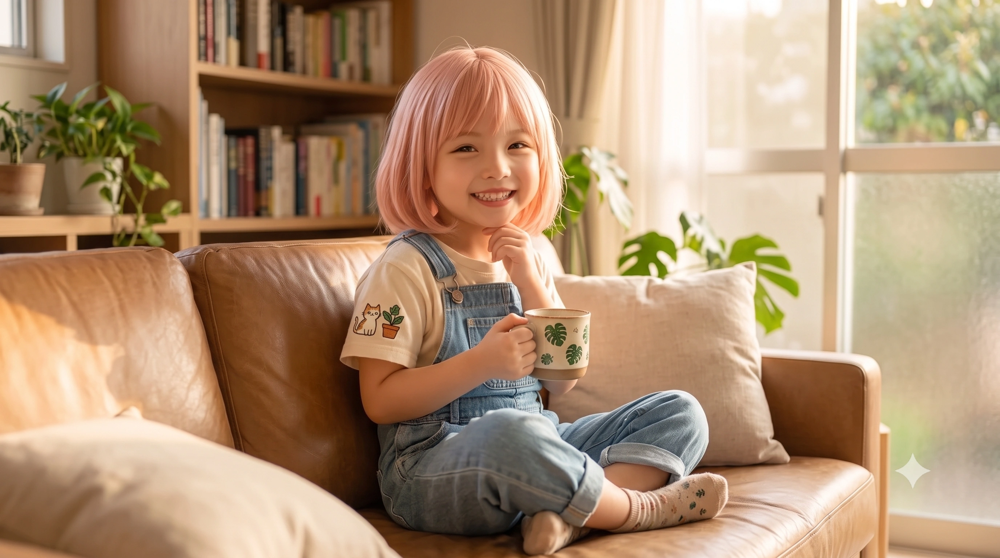

🌻 [알림] 리에라몰 스리즈 부케 한정판 타코야키 판매 시작! 하화연도 추천하는 꿀맛 보장.
1. 개요
"당가고를 비추는 햇님 걸! 화연이가 텐션 올려줄게 큥!"
효빈광역시 안천구에 위치한 당가고등학교 3학년에 재학 중인 학생. '지아센(지역아동센터) 5인방'의 일원이자 팀 내 힐링과 활력소를 담당하는 무한 긍정 에너자이저다. 평소 "햇님 안냐세요~!!"라는 시그니처 인사와 함께 늘 해맑은 댕댕이(강아지) 같은 귀염성과 미소를 잃지 않는 순둥이 캐릭터이다.
작중 'Love Live! Hasunosora Girls' High School Idol Club(하스노소라)'의 103기생 주인공인 히노시타 카호와 완벽하게 일치하는 기믹, 외모, 에너제틱한 성격, 머리 위의 바보털, 그리고 어릴 적 병약했던 과거까지 소름 돋게 똑같은 '현실판 카호'다. 심지어 머리를 굴리다 과부하가 걸리면 정수리에서 김이 빠지는 "치이이익-" 소리까지 똑같이 낸다. 이쯤 되면 사실상 본인이 이세계 전생한 게 아니냐는 합리적 의심이 든다. 핑크빛이 감도는 단발머리에 아담한 체구를 지녔으나, 그 체구에 전혀 비례하지 않는 압도적인 볼륨감(기적의 흉부 업그레이드)을 뽐내는 반전 피지컬의 소유자이기도 하다.
어릴 적에는 잔병치레가 너무 심해 학교를 거의 나가지 못해 유급 위기까지 겪었으며, 큰 병원(효빈대병원) 근처로 이사하면서 가정 형편이 극도로 악화되어 차상위계층으로 전락, 지역아동센터(지아센)의 보살핌을 받아야 했다. 하지만 그곳에서 대학생 멘토였던 박효빈(현 효빈광역시장)을 만나 책상 밑에서 도망치던 공부 기피증을 재미있는 퀘스트식 공부법으로 극복하고, 코즈에 오시인 유초애 선배의 껌딱지가 되거나 5차원 영애로 각성하는 유세라(세라스 오시)와 아픔을 공유하며 끈끈한 인연을 맺었다.
초등학교 3학년을 기점으로 기적처럼 완치된 이후, 집안 사정도 다시 안정을 되찾아 차상위계층에서 벗어났다. 그동안 아파서 놀지 못했던 한(恨)을 풀기라도 하듯 엄청난 에너지와 텐션으로 당가고등학교의 '비글'이자 분위기 메이커로 맹활약 중이다. 또한 효빈시의 거대 오타쿠 연합인 '리에하스 연합'의 든든한 햇님 포지션을 맡고 있다. 그러나 사랑하는 동지들과 은인 박효빈 시장을 모독하는 악당 앞에서는, 평소의 햇살 같은 미소를 싹 거두고 서슬 퍼런 핏빛 살기와 거친 쌍욕마저 뿜어내는 '분노의 사자후' 캐릭터로 돌변하는 극적인 입체성을 지니고 있다.
2. 히노시타 카호와의 소름 돋는 평행이론
2.1. 이름의 굴레 (하화 = 下花)와 생일의 비밀
그녀의 이름 '하화연(河花燕)'은 히노시타 카호(日野下 花帆)의 한자 중 '아래 하(下)'와 '꽃 화(花)'를 정확히 가져온 이름이다. 게다가 원작 카호의 생일인 5월 22일(05-22)을 거꾸로 뒤집은(숫자 배열 애너그램) 2월 25일(02-25)이 화연의 실제 생일이다! 이 사실이 알려지자 오타쿠들은 "이름부터 생일까지 우주가 점지해 준 완벽한 현실판 카호다"라며 혀를 내둘렀다.
2.2. "작은데 커요" 아담하지만 압도적인 볼륨감
신체적 특징마저 카호의 완벽한 복사판이다. 키는 155cm로 원작 카호와 1mm의 오차도 없이 동일하다.
평소 발랄하고 아기 같은 행동 때문에 잘 부각되지 않지만, 사실 그녀는 굉장히 글래머러스한 압도적 몸매를 숨기고 있다. 당가고등학교 하복(반팔)을 입는 여름철이 되면, 155cm의 작은 체구에 어울리지 않는 엄청난 볼륨감 때문에 묘하게 주변 학생들의 시선을 끄는 '베이글녀'의 정석을 보여준다.
2.3. 에너자이저 성격과 공부 기피증, 그리고 "치이이익-"
원작의 카호가 공부에 영 소질이 없고 활발한 것을 좋아하듯, 화연 역시 책상에 10분 이상 앉아있으면 온몸이 비틀리는 심각한 공부 기피증을 앓고 있다. 하지만 몸을 쓰는 일이나 누군가를 돕는 일, 춤추고 노래하는 일에는 무한한 체력과 전력을 다하는 '무엇이든 전력!'의 모토를 그대로 실천하며 당가고의 에너자이저로 불린다. 특히 조금이라도 복잡한 수학 공식이나 어려운 한자를 보면 원작 카호처럼 머리에 과부하가 걸려 "치이이익-" 소리를 내며 책상에 엎어지는 밈을 현실에서도 완벽하게 재현한다.
3. 생애 및 학창 시절 (눈물겨운 완치 서사)
3.1. 안천구 백합동 시절: 병마와 유급의 위기
효빈광역시 안천구 백합동에서 태어났다. 어린 시절 그녀는 잔병치레가 심한 것을 넘어, 병원에 입원해 지내는 날이 집에서 지내는 날보다 많았을 정도로 몸이 매우 약했다. 원작 카호의 병약 속성을 현실로 뼈저리게 겪은 셈이다.
동네의 화범초등학교에 입학했지만, 1학년 1학기 내내 학교를 나가지 못했다. 출석 일수가 턱없이 부족하여 초등학교 1학년 때 유급(꿇기) 당할 뻔한 심각한 위기에 처했으나, 부모님의 간곡한 사정과 연말에 기적적으로 병세가 호전된 덕분에 아슬아슬하게 출석 일수를 채워 간신히 진급할 수 있었다.
3.2. 서구 청덕동 이주와 차상위계층의 설움
화연의 병은 안천구의 작은 병원들(당시 안천병원 등)에서는 완벽히 고칠 수 없는 희귀한 질환이었다. 제대로 된 치료를 받기 위해서는 효빈시 최고의 상급종합병원인 효빈대학교병원을 매일같이 들락거려야 했다.
결국 부모님은 화연의 치료와 통원 편의를 위해, 효빈대병원과 가까운 서구 청덕동(당시 한창 개발 중이던 변두리)의 낡은 빌라로 이사를 감행했다. 학교도 화범초에서 청덕초등학교로 전학을 갔다. 하지만 막대한 병원비와 이사 비용 탓에 집안 형편은 순식간에 기울었고, 결국 차상위계층으로 전락하여 방과 후에는 지역아동센터(지아센)에 의탁해야만 하는 신세가 되었다.
3.3. 지아센 멘토 박효빈과의 만남 (놀이식 공부법)

잔병치레를 털고 일어나 멘토 박효빈을 조르며 "센터 마당에서 얼음땡 술래 해줘요!"라며 해맑게 웃던 소녀의 모습.
가난과 병마에 지쳐있던 청덕동 지아센 시절, 화연을 담당하게 된 멘토가 바로 15학번 대학생이던 박효빈(현 효빈광역시장)이었다.
첫날 열이 펄펄 끓어 조퇴했던 화연은 1주일 차가 되자 발그레한 볼을 하고 씩씩하게 센터에 나타나 "선생님! 저 오늘은 하나도 안 아파요! 센터 올 때 기침도 한 번밖에 안 했어요!"라며 특유의 에너지를 뿜어냈다. 화연은 어릴 적부터 병원에 갇혀 사느라 기초 학력이 전혀 없었고, 공부 자체를 지독하게 싫어했다. 당시 화연은 책상에 5분만 앉아있어도 좀이 쑤셔 책상 밑으로 기어들어가 숨기 일쑤였다. 하지만 박효빈은 억지로 주입식 교육을 하지 않았다. 대신 책상 밑으로 도망간 화연의 다리를 붙잡고 질질 끌어내며, 수학 1단원을 풀 때마다 포장마차 떡볶이와 피카츄 스티커를 보상으로 거는 '실물 경제 기반 퀘스트 제도'를 도입했다.
[하화연] "진짜요 쌤?! 그럼 나 무조건 다 맞힐 거야! 텐션 올라간다 큥! 치이이익- 앗 뜨거워!"
먹을 것에 눈이 돌아간 화연은 엄청난 텐션으로 문제를 풀었고, 머리에 과부하가 걸려 정수리에서 김이 빠지는 "치이이익-" 소리를 내면서도 끝내 피카츄 스티커와 떡볶이를 쟁취해냈다고 한다. 그뿐만 아니라 동화책을 다 읽고 나면 "주인공처럼 저도 이제 튼튼하니까 1등 할 수 있어요! 이따가 마당에서 얼음땡 술래 해주셔야 돼요!"라며 쌤의 과잠을 콕콕 찌르며 귀여운 억지를 부렸다. 박효빈의 헌신적이고 재치 있는 멘토링(초2 후반 ~ 초4) 덕분에, 화연은 공부에 대한 거부감을 없애고 학교 진도를 무사히 따라잡을 수 있었다. [1]
3.4. 유세라(현실판 세라스)와의 인연과 구원
이 지아센 시절, 화연은 자신의 인생에 없어서는 안 될 또 다른 운명의 짝을 만난다. 바로 혼혈이라는 이유로 심각한 따돌림을 당해 마음의 문을 닫고 있던 유세라(현실판 세라스)였다.
원작에서 카호와 세라스가 '병원 친구'로 인연을 맺었던 것처럼, 현실에서는 지아센 구석에서 웅크리고 있던 세라에게 화연이 먼저 다가갔다. 화연은 아팠던 자신의 경험을 털어놓으며, 우울해하는 세라의 손을 잡고 "세라 쨩! 내가 병원에 오래 있어서 아는데, 가만히 우울해하면 병균이 더 좋아해! 나랑 같이 햇볕 쬐면서 뛰놀자 큥!"이라며 세라를 억지로 양지로 끌어냈다. 이 눈물겨운 상호 구원 서사 덕분에, 두 사람은 지금까지도 서로의 멘탈을 챙겨주는 완벽한 '카호세라'의 관계성을 유지하고 있다. [2]
3.5. 기적의 완치와 재정 회복, 그리고 당가고 진학
초등학교 3학년을 기점으로, 효빈대병원의 꾸준한 치료와 밝아진 멘탈 덕분에 화연의 병은 기적처럼 완치 판정을 받게 되었다.
화연의 병이 낫자 천문학적으로 빠져나가던 병원비 지출이 드디어 멈췄고, 그동안 고생했던 부모님이 독하게 돈을 모으며 집안 사정도 빠르게 안정을 되찾았다. 마침내 차상위계층 딱지를 떼고 평범하고 화목한 중산층 가정으로 복귀할 수 있었다.
건강과 경제적 여유를 동시에 되찾은 화연은 그동안 병실에 갇혀 놀지 못했던 한(恨)을 풀기라도 하듯, 엄청난 에너지와 하이텐션을 폭발시키며 학교를 휩쓸고 다녔다. 체육 시간만 되면 남자애들보다 더 날래게 축구장을 뛰어다녔고, 당가중학교를 거쳐 당가고등학교에 진학한 현재는 당가고의 공식 '에너자이저'이자 비글로 군림하고 있다.
3.6. 짧았던 만남과 엇갈림의 아쉬움
어린 시절 지독한 병마와 가난에 시달리며 족포초등학교 마굴 같은 환경에서 자랐던 화연에게 박효빈 쌤의 멘토링은 따뜻한 떡볶이 한 그릇과 다정한 손길 그 자체였다. 하지만 하화연 본인은 아플 때가 너무 잦아 결국 멘토링을 다른 동지들보다 일찍 그만두어야 했고, 그만두고 나서야 겨우 1번 박효빈과 마주쳤을 정도로 둘의 인연은 짧고도 애틋했다.
이후 건강을 회복하고 세라, 주미 등과 함께 '지아센 원정대'를 꾸려 대학생과 복지사로 일하던 박효빈을 찾아 나섰으나, 번번이 텅 빈 자리만 확인하고 헛걸음을 쳐야 했던 아쉬운 엇갈림의 기억을 동지들과 깊이 공유하고 있다.
4. 인간 관계 (현실판 하스노소라 유니버스)
4.1. 박효빈 (효빈광역시장, 영원한 멘토 쌤)
초등학생 시절, 공부를 피해서 책상 밑으로 도망가던 자신을 포기하지 않고 끄집어내 재밌게 이끌어준 영원한 멘토 쌤. 박효빈이 시장으로 당선되었을 때, 당가고 학생 신분으로 시청 앞 당선 축하 행사장에 찾아가 "효빈 쌤!! 나 완치됐어!! 나 이제 안 아파!!"라며 방방 뛰었다. 박효빈은 훌쩍 큰 화연을 보고 울컥하여 주변 시선도 아랑곳하지 않고 화연의 머리를 마구 쓰다듬어 주었다.
2026년 지아센 5인방과 함께 시장실을 난입했을 때도, 과거 '먼지(히드라)' 사건의 진실이 폭로되어 정곡을 찔린 효빈 쌤이 묵언수행에 들어가자 "그 먼지라는 선생님은 저희 이름도 까먹었지만, 효빈 쌤은 우리 밥도 다 챙겨주고 제일 재밌게 놀아주셨잖아요! 쌤이 최고예요!"라며 순수한 팩트 폭격과 사랑을 쏟아부어 민망해하던 멘토의 광대를 다시 승천하게 만들었다.
4.2. 유세라 (세라스 오시, 아픈 시절의 동지)
지아센 시절부터 아픔을 공유한 소꿉친구 유세라. 세라가 5차원 영애 컨셉으로 "천한 우민들!"을 외치고 다녀도, 화연은 "우리 세라 쨩 오늘도 텐션 좋네 큥!"이라며 완벽하게 장단을 맞춰준다. 두 사람은 만날 때마다 서로 안고 뒹굴며 현실판 '카호세라'의 달달한 백합(?) 캐미를 뽐내 주변 친구들의 눈꼴을 시리게 만든다.
4.3. 유초애 (코즈에 오시, 지아센의 영원한 보호자)
원작의 스리즈 부케(카호&코즈에) 콤비를 현실에서 끈끈하게 이어가고 있는 영원한 언니다. 오토무네 코즈에 오시인 유초애(효빈대 음악학과, 06년생, 족포초→안천초→당가중→당가고)는 화연보다 2살 위로, 화연과 같은 지아센(초3~초5 시절)을 다니며 박효빈의 멘토링을 함께 받았다.
당시 병이 나은 직후 텐션이 폭발해서 지아센을 휩쓸고 뛰어다니는 화연을 유일하게 우아한 미소로 제어하며 챙겨주던 '엄마' 같은 존재였다. 화연은 지금도 "초애 언니!! 큥 큥!!"이라며 완벽한 응석받이 모드가 되며, 초애 선배의 곁에 찰싹 달라붙어 껌딱지가 된다. 카호가 코즈에 선배에게 맹목적인 애정을 쏟듯, 화연 역시 유초애 앞에서는 순한 양 그 자체다.
4.4. 나수미 (지아센의 팩폭 언니이자 티키타카 콤비)
지아센 시절 중등부 빵순이였던 나수미(효빈대 제과제빵과)와는 지독한 팩폭과 티키타카를 주고받는 사이다. 2026년 시장실에서 화연이 옛날 눈치 없던 '먼지' 쌤을 회상하며 "전 그 쌤 동물원 카피바라 닮아서 귀여웠는데요!"라고 해맑게 말하자, 수미가 미간을 팍 좁히며 "야, 하화연. 너 카피바라한테 사과해라. 그 쌤은 애들이 밥 굶든 말든 폰만 보던 인간 조무사 히드라리스크였어"라며 자비 없는 츳코미를 날렸다. 화연은 바보털을 푹 숙이며 "앗... 미안해 카피바라야..." 하고 바로 깨갱하는 완벽한 서열 관계(?)를 보여준다.
4.5. 임은혜 (메구미 오시, 미라쿠라파크 현실판 콤비)
메구미 오시인 임은혜(해천대 미디어영상콘텐츠학과, 06년생)와는 완벽한 '미라쿠라파크!' 현실판 콤비이자 '바보+바보' 조합이다.
은혜가 방송에서 한자를 못 읽고 쩔쩔매면, 화연이 옆에서 "은혜 언니! 그거 '개세' 아니야?"라며 똑같이 틀린 훈수를 두어 방송 채팅창을 초토화시키는 환장의 콤비다. 물론 둘 다 정답은 모른다. 은혜당 방송에 게스트로 출연하여 머리에 과부하가 걸려 특유의 "치이이익-" 소리를 내며 쓰러지는 모습이 그대로 송출되어 큥단(팬덤)의 열광적인 지지를 받기도 했다. [3]
4.6. 효빈시 돌케스트라 멤버들 (도소영, 추주리)
도소영(동구대 산업디자인학과, 07년생, 코스즈 오시)은 화연과 같은 지아센에서 박효빈에게 멘토링(초2 후반 ~ 초4)을 받은 직속 언니다. 안천과학고등학교 2학년인 추주리(09년생, 덕빈북도 군천시 출신, 츠즈리 오시)와는 당가중학교 시절부터 얽히며 안면을 텄다.
이 셋이 모이면 그야말로 브레이크 고장 난 자동차들의 모임이 된다. 4차원 주리가 엉뚱한 발언을 하면 화연이 1차원적인 리액션으로 받아치고, 소영이가 "체스토-!"를 외치면 화연이 "무엇이든 전력!"으로 맞받아친다. 문제는 이 텐션을 말릴 정상인이 파티에 없다는 것이다.
4.7. 김현문 (연좌제로부터 지켜낸 선량한 친구)
김현문은 끔찍한 범죄를 저지른 사이버 렉카 김용효의 아들이지만, 부모의 죄와 무관하게 평소 화연과 농구도 같이 하며 쾌활하게 지내던 선량한 동급생이다. 현문이 아빠의 범죄 때문에 개진우와 양채연 등 쓰레기 일진들에게 가증스러운 핑계(화연을 위한다는 명분)로 조리돌림을 당하자, 화연은 1초의 망설임도 없이 피도 눈물도 없는 살기로 돌진해 일진들을 박살 내고 현문의 완벽한 방패가 되어 주었다. 이 일로 현문은 화연에게 평생 갚지 못할 마음의 빚과 고마움을 지니게 되었다.
4.8. 개진우 (최악의 쓰레기 찌질남)
개진우는 1년 선배 도소영과 3주간 사귀다가 체육대회에서 화연의 발달한 흉부 피지컬을 보고 불순한 의도로 환승 이별을 시도한 역대급 인간말종이다. 당연히 화연은 이런 쓰레기를 단칼에 걷어찼다. 이후 화연의 이름을 핑계로 김현문을 괴롭히다 화연에게 쌍욕을 처먹고 쫓겨나자, 앙심을 품고 화연과 도소영에 대한 입에 담기 힘든 성희롱과 패드립을 살포했다가 본인의 인생이 시원하게 박살 나고 퇴학당했다.
4.9. 양채연 (음습한 열등감 덩어리)
양채연은 아담한 키에도 압도적인 볼륨감과 무한 긍정 에너지로 언제나 사랑받는 하화연을 뼛속 깊이 시기하고 질투하던 가짜 모범생 위선자다. 자신이 꼬시려던 개진우마저 화연에게 들이대다 까인 사실에 폭주하여, 김현문을 괴롭힐 때 일부러 화연의 이름을 팔아 화연까지 곤란하게 만들려 했다. 하지만 화연의 핏빛 사자후에 기가 눌려 도망친 후 본색을 드러내며 화연의 몸매를 비하하다가 친구들에게마저 완벽히 손절당하고 강제전학으로 쫓겨나는 참교육 엔딩을 맞았다.
5. 카호 오시로서의 활동 및 밈 (Meme)
5.1. 투머치토커와 바보털의 자아(?)
원작 카호처럼 말이 엄청나게 많다. 한번 수다를 시작하면 30분 동안 숨도 쉬지 않고 자신이 본 유튜브 토끼 영상이나 틱톡 썰을 풀어낸다.
게다가 머리 양옆으로 살짝 튀어나온 두 가닥의 바보털을 항상 세팅하고 다니는데, 놀라거나 기쁠 때 이 바보털이 미세하게 떨리는 기현상(?)이 관찰된다고 한다. 리에하스 연합 언니들은 화연을 볼 때마다 "저 바보털이 본체 아니냐"며 자전거 핸들 잡듯 바보털을 쥐고 장난을 친다.
5.2. "대도시다...!" 시골뜨기 밈의 현실화
원작 카호가 이시카와현 카나자와시를 보고 "대도시다!"라며 감탄하는 시골뜨기 밈을 현실에서도 시전한다. 어릴 적 안천구 백합동(비교적 외곽)과 청덕동(당시 미개발지)에서만 자랐던 화연은, 훗날 당가고에 진학하고 안천구 최고 번화가인 리에라몰이나 효빈시 중심부에 갈 때마다 눈을 동그랗게 뜨고 "와... 대도시다 큥!!"이라며 촌티를 팍팍 내어 친구들을 부끄럽게 만든다. [4]
6. 사건 사고 및 해프닝 (지아센 5인방의 재회와 억까 퇴치)
6.1. 시장실 난입과 '히드라리스크' 대첩의 전말
수년 뒤, 5인방과 함께 은인인 박효빈의 시장실 문을 박차고 전격 난입하며 "쌤! 드디어 만났다!"라고 왁자지껄 환호성을 지르며 해맑게 기뻐했다. 하지만 하화연 역시 유독 발달한 흉부 피지컬을 지니고 있었기에, 정면의 유세라와 좌우의 유초애, 이주미와 함께 완벽한 포위망을 형성하여 박효빈 시장에게 '시선 고문 대참사'를 선사했다.
10년 전 엘린센터 미술 시간, 화연은 세라, 소영이와 함께 박효빈 쌤의 얼굴을 그리고 있었다. 그때 매일 폰만 보던 '먼지(15학번)' 쌤이 기웃거리자, 순둥이 화연이마저 양팔을 벌려 스케치북을 가로막으며 "비밀이니까 쌤 나가요!!"라며 완벽한 문전박대를 시전했다. 이후 화연은 벽에 붙여둔 먼지의 초상화(머리 세 개 달린 피 뿜는 히드라리스크)를 보며 효빈에게 "쌤, 저 쌤 동물원에 있는 카피바라 닮았어요!"라며 천진난만하게 확인 사살을 꽂았고, 이를 본 효빈은 탭댄스를 추며 과자 파티를 열었다.
[10년 후의 완벽한 대비]
10년 후 시장실에서 이 진실이 폭로되자, 화연은 바보털을 흔들며 말했다. "근데 쌤. 그 먼지라는 쌤은 5개월만 지나도 저희 이름은커녕 얼굴도 다 까먹고 한 번도 안 찾아왔거든요? 반면에 효빈 쌤은 더벅머리로 양손에 아이스크림 바리바리 싸 들고 계속 저희 보러 와주셨잖아요." 아이들의 기억 속에서 가짜 어른(먼지)은 완벽히 지워졌고, 진짜 멘토(박효빈)의 따뜻한 체온만이 10년이 지나도 선명하게 새겨져 있음을 증명한 감동적인 순간이었다.
6.2. 분노의 각성 1단계: 기적의 떡볶이 억까와 핏빛 살기
시청 복도에서 끌려가던 윤재훈 끄나풀이 "10년 전 대학교 다니면서 지아센 애들한테 사준 떡볶이도 불법 기부행위다!"라는 기적의 뇌절을 시전했을 때의 일이다.
가난하고 아팠던 시절 유일한 온기였던 떡볶이의 소중한 추억마저 모독당하자, 늘 환하게 웃던 하화연의 얼굴에서 온기가 싹 사라지고 눈동자에 서슬 퍼런 음영이 드리워졌다. 18년 생애 단 한 번도 써본 적 없던 극악무도한 쌍욕이 목구멍 턱밑까지 차올랐고, 주먹을 하얗게 쥐어뜯으며 핑크빛 단발머리 사이로 사정없이 핏빛 살기를 뿜어냈다.
끝내 쌍욕은 삼켜냈지만, 복도 전체를 찌를 듯한 사자후를 토해냈다. "당신들 진짜 사람도 아니야! 우리 쌤의 따뜻한 마음을 감히 그따위 더러운 주둥이로 짓밟아?!" 이 사자후에 놈들은 멘탈이 바스러져 덜덜 떨며 끌려갔고, 화연은 '반드시 저놈들을 내 손으로 응징하겠다'는 서늘한 맹세를 가슴에 새겼다.
6.3. 대형 식당과 안천대교: 표적이 된 막내, 폭주하는 분노
대형 식당에서 밥을 먹던 중 윤재훈 끄나풀 놈이 난입해 성희롱을 뱉으며 하화연의 어깨 쪽으로 추악한 손을 뻗어 물리적 접촉을 시도했다. 이 선을 넘는 행위가 결정적인 트리거가 되어, 이주미가 식당이 떠나가라 사자후("씨발놈아!")를 내지르며 놈을 응징하게 된다. 화연은 주미의 든든한 보호 아래 놈을 에워싸며 차가운 음영을 뿜어냈다.
이후 이주미가 언론의 악의적 마녀사냥으로 인해 안천대교에서 극단적 선택을 시도하려다 구조되었을 때, 현장에 달려와 주미를 부둥켜안고 대성통곡했다. 그런데 곁에 있던 웬 행인 놈이 "시장이 어리니까 문란하게 논 거다", "자살 쇼하고 자빠졌네"라며 선을 넘는 비아냥을 쏟아냈다.
그 순간, 화연의 눈동자가 피칠갑을 한 듯 뒤집혀 놈을 향해 사자후를 갈기고 그대로 들이받으려 튀어나갔다. 다행히 도소영이 전력으로 허리를 껴안아 채며 죽을힘을 다해 막아선 덕분에 물리적 유혈 사태(?)는 피했지만, 동지를 모욕하는 자 앞에서는 이성을 잃고 맹수처럼 돌진하는 뜨거운 의리를 완벽하게 보여주었다.
6.4. 동지를 향한 치유와 힐링 에너자이저
사건 이후 주미가 심각한 트라우마(PTSD)와 환청으로 고통받으며 정신과 치료를 받을 때, 가장 앞장서서 분위기를 띄운 것은 화연이었다. 도소영과 함께 끊임없이 시답잖은 최신 틱톡 챌린지 춤을 우스꽝스럽게 춰대며, 주미의 우울함이 비집고 들어올 틈조차 주지 않고 입가에 찐웃음을 되찾아주기 위해 헌신적으로 노력했다.
6.5. 분노의 각성 최종 단계: 분식집 패드립 참교육
모든 사건이 억까 세력의 사법적 멸망으로 끝나고, 박효빈 시장이 사준 분식집에서 어묵 꼬치를 들며 배시시 웃음을 되찾았다. "맞아요, 햇님(시장)! 저희 당가고 애들도 그렇고, 인터넷에서도 주미 보고 완전 걸크러시 영웅이래요! 그 찌라시남 놈 2심에서 징역 12년에 전자발찌 10년 찬 거 보니까 10년 묵은 얹힌 게 싹 내려갔어요 ㅋㅋㅋ"
그런데 그 훈훈한 순간, 뇌가 텅 빈 윤만우 하나가 분식집에 난입해 "시장이 여고생한테 뇌물수수 받는다"며 카메라를 들이밀고, 급기야 박효빈 시장을 향해 입에 담지 못할 패드립('느금마 필리핀 년이라...')을 시전했다.
그 순간, 은인과 동지들의 상처를 짓밟는 그 짐승 같은 짓거리에, 평소의 순둥이 화연은 완전히 자취를 감추었다. 화연은 테이블을 쾅 내리치고 벌떡 일어나, 유리창이 바르르 떨릴 정도의 엄청난 사자후를 놈의 콧구멍에다 내질렀다.
이 살기 어린 한마디에 분식집 안의 소음이 단 0.1초 만에 뚝 끊겼고, 5인방의 과거를 아는 주변 시민들마저 '저 쓰레기한테는 저게 정답이지'라며 무언의 지지를 보냈다. 기세에 완전히 쫄아버린 놈은 줄행랑을 치려다 시민들의 신고로 112에 끌려가 완벽한 자폭 엔딩을 맞았다.
6.6. 언론의 '효빈시 패싱'과 사이다 안도
분식집에서 시원하게 쌍욕 사자후를 날린 직후, 화연은 덜컥 겁을 먹었다. '(어, 나도 이주미처럼 기레기들한테 도촬당하고 마녀사냥 당하는 거 아니야...?)'라며 덜덜 떨기 시작한 것이다.
하지만 과거 이주미 찌라시 조작 사건으로 6천만 원 배상금 철퇴와 기레기 파면이라는 파멸적 대가를 치렀던 언론사 본사들은 기겁을 하고 있었다. "미쳤어?! 효빈시 근처에 발만 디뎌도 당장 해고야!"라며 효빈시에 대한 전면 취재 보이콧을 선언한 상태였다. 포털 메인에는 화연을 비난하는 기사 대신, 윤만우의 비참한 연행 소식만 팩트 기반으로 실렸을 뿐이다.
이를 본 박효빈 시장이 "똥이 무서워서 피하냐, 더러워서 피하지. 걱정 말고 맛있는 거나 더 먹어"라며 안심시켜 주자, 화연은 그제야 안도의 한숨을 내쉬며 완벽한 해피엔딩을 맞이했다.
6.7. '정서적 교감' 호소인들의 레스토랑 습격과 엑스칼리버 바게트 참교육
박효빈 시장과 지아센 5인방이 시정 업무와 학업의 노고를 풀며 고급 레스토랑에서 모처럼 화기애애하게 식사를 즐기고 있을 때였다. 백수와 프리터로 전락해 주변을 배회하던 과거 엘린지역아동센터의 15학번 동갑내기 빌런 듀오, 경영15병신과 먼지년이 뻔뻔한 얼굴로 다가와 테이블 옆에 툭 멈춰 섰다.
이들은 과거 센터 시절 박효빈에게 온갖 서류와 잡일(초3 들이 단위 변환 등)을 다 짬때리던 주제에, 특유의 가증스럽고 고상한 척하는 존댓말 어조를 그대로 시전하며 빈대를 붙으려 했다.
[먼지년]: "맞아요, 박 선생님. 중학생 애들도 아까부터 선생님만 찾던 것처럼, 저희도 배가 고픈데 마침 아주 잘 만났네요. 명색이 옛날에 같이 고생했던 동료인데, 이 비싼 메뉴들 중에서 제일 실한 것들로 결제해 주시는 게 도리 아니겠어요? 초등 산수나 서류 같은 건 저희가 과감하게 양보해 드렸으니, 이 정도 대접은 기쁘게 해주실 수 있죠?"
이 어이없는 '피딩' 발언에 식사하던 테이블에는 순식간에 영하의 한기가 감돌았다. 유세라는 "세상에... 박물관에 사육장 탈출한 원숭이 두 마리가 기어 나왔나 봐"라며 혀를 내둘렀고, 박효빈 시장은 숟가락을 내려놓고 차갑게 철벽을 쳤다.
[카피바라 추억팔이와 잘못된 이름 호출의 최후]
팩폭에 뼈가 가루가 된 두 흉물이 "아니 이 새끼가 진짜?! 네가 당연히 할 일을 한 거지!"라며 악을 쓰려던 찰나, 맞은편에서 샐러드를 먹던 하화연의 정수리에서 "치이이익-" 김이 뿜어져 나왔다. 눈동자가 뒤집힌 하화연이 벌떡 일어나 "야!!! 이 뇌에 똥만 찬 뻔뻔한 똥파리들아!!!"라며 사자후를 준비하자, 기선에 완전히 제압당한 먼지가 끔찍한 악수를 두고 만다.
먼지의 입에서 이름 오타 공격과 '카피바라'가 튀어나오자 식당은 얼어붙었고, 분기탱천한 하화연은 핏발이 선 눈으로 완전히 이성의 끈을 놓았다.
같은 편인 경영15병신조차 "야, 너 미쳤냐?! 무슨 카피바라 소릴 하고 앉았어!"라며 헛구역질을 할 정도로 자폭의 스케일은 남달랐다.
[적반하장 고소 호소와 5인방의 철벽 방어]
자신의 멍청한 실수가 팩폭으로 박살 나자 먼지와 경영15병신은 당황스러움을 덮기 위해 "박효빈 시장 새끼가 애들을 가스라이팅하고 세뇌했다!"라며 카메라를 들이밀고 고소 협박을 시전했다. 하지만 지아센 5인방은 그저 기가 차다는 듯 응수했다.
- 유초애: "고소요? 무고죄와 명예훼손 성립 요건이 아주 탄탄하던데, 검찰에 직접 고소장 접수하는 법부터 다시 배워오셔야겠어요."
- 도소영: "지나가던 개가 똥을 싸고 있네. 짬처리는 너희가 해놓고 고소는 피해자들이 당해야 돼?"
- 유세라: "뇌 MRI 찍어보면 안에서 먼지만 날릴 것 같은데, 병원비는 국가에서 지원 안 해주나 봐."
- 이주미: "고소 협박으로 위기를 모면하려는 전형적인 가해자 수법이네요. 이미 전부 채증 완료했습니다."
[숙미(?)와 엑스칼리버의 등장: 나수미의 팩폭 폭격]
때마침 갓 구운 빵 봉지를 든 나수미가 이 환장 파티를 목격하고 다가왔다. 먼지와 경영15병신은 지아센 시절 나수미가 박효빈에게 장난스레 툴툴대던 걸 오해하여, "너도 저 인간한테 세뇌당한 피해자지? 같이 매장시키는 데 동참해!"라며 구원을 요청했다. 심지어 나수미의 이름에 대고 "숙미 맞지?"라며 이름 오타 2연타를 날려버렸다.
애초에 쌤 어머니 필리핀 분이신 거랑 나도 필리핀 계열이라 공감대가 얼마나 끈끈했는데 날조야? 너네야말로 쌤한테 일 다 짬때리고 피시방으로 튀어가서 스타나 쳐 하던 흉물들이었잖아! 남들은 시장까지 달고 사회에 기여하는데, 너네는 다 커서 백수랑 프리터로 전락해 남의 등골이나 빨아먹으려고 기어들어 와? 내 빵 굽는 오븐에 넣어버리기 전에 당장 그 더러운 주둥이 안 닫아?!"
"한 번만 더 내 이름 틀리고 우리 쌤 괴롭히면 진짜 내가 직접 구운 돌덩이 같은 '엑스칼리버 바게트'로 머리통을 깨버릴 줄 알아!"라는 나수미의 피도 눈물도 없는 팩폭 기관총 세례에 두 흉물은 멘탈이 완벽하게 가루가 되었다. 사법 처리에 대한 공포와 식당 내 쏟아지는 수백 개의 따가운 눈총에 얼굴이 하얗게 질린 먼지와 경영15병신은 결국 허겁지겁 비명을 지르며 줄행랑을 쳤고, 이로써 짬처리 듀오의 파렴치한 난동은 효빈위키 레전드 자폭 사건으로 영원히 박제되었다.
6.8. 당가고 연좌제 조리돌림 방어전: 분노의 사자후
김용효의 1심 중형 선고와 도피성 자살 소식이 지역 뉴스를 도배한 직후의 가을. 당가고등학교 교실 뒤편과 사물함 주변에서 평소 도소영의 서브컬처 취향과 챌린지를 못마땅하게 보던 일진 무리 둘셋과 인터넷 극우 커뮤니티 밈을 입에 달고 살던 남학생 몇 명이 모여 낄낄거리고 있었다.
그들의 잔인한 시선이 닿은 곳은 벽 쪽에 서서 죄책감과 당혹감에 고개를 푹 숙이고 있던 김용효의 큰딸(고3)이었다.
같은 시각, 2학년 복도 역시 김용효의 아들인 김현문(고2)을 둘러싸고 개진우와 양채연을 위시한 가해 무리가 린치를 가하고 있었다. 평소 화연을 뼛속 깊이 시기하던 양채연과, 화연에게 들이대다 차였던 쓰레기 개진우는 비열하게도 하화연의 이름을 방패막이로 내세우며 선량한 현문을 물어뜯었다.
[가해 여학생 D: 양채연] "야, 하화연 집 앞에 쳐들어간 놈들이 너네 아빠 부하들이잖아. 하화연이 얼마나 고통받았는지 알아?! 범죄자 가족이면 조용히 숨어 살아야지, 뻔뻔하게 학교에 얼굴을 들이미냐? 너 같은 건 학교 다닐 자격도 없어!"
[김현문] (주먹을 꽉 쥔 채 고개를 숙이며) "나 아빠랑 연락도 안 해. 나한테 왜 이러는데……."
그때 계단을 쿵쾅거리며 뛰어내려온 하화연이 인정사정없이 몸으로 밀치며 끼어들었다. 155cm의 작은 체구에서 뿜어져 나오는 피도 눈물도 없는 핏빛 살기에 가해 학생들이 흠칫 물러섰다.
평소 순둥이였던 하화연이 눈을 뒤집고 고함을 지르자, 개진우와 양채연 무리는 사색이 되어 쥐 죽은 듯 도망쳤다. 화연은 하얗게 질려 떨고 있던 현문의 어깨를 툭 치며 "야, 기죽지 마. 네가 잘못한 거 하나도 없어. 저런 찌질한 놈들이 또 헛소리 지껄이면 바로 나나 소영 언니 불러. 알았어?!"라며 완벽한 방패가 되어 주었다. 이 순간 현문은 참았던 눈물을 쏟아냈다고 한다.
6.9. 시청 긴급 대책 회의 (가짜 정의에 대한 일갈)
시장 집무실 안에는 차가운 긴장감이 감돌았다. 소영과 화연은 상기된 얼굴로 학교에서 벌어진 상황을 박효빈 시장과 이남현 효빈시교육감에게 털어놓았다.
[하화연] "맞아요 쌤! 걔네가 우리 핑계 대면서 애들을 괴롭히니까, 학교에선 오히려 저희 때문에 시끄러워졌다는 말까지 돌아요. 걔들이 괴롭힘당할수록 우리도 두 배로 욕먹고 가슴이 찢어지는데…… 왜 우리를 팔아서 저딴 짓을 하냐고요!"
보고를 들은 이남현 교육감은 "피해자들의 이름을 방패막이로 삼아 비열한 폭력을 정당화하다니, 이건 교육 현장의 근간을 무너뜨리는 야만"이라며 탄식했다. 족포초 시절 연좌제 린치를 당했던 박효빈 시장의 눈빛은 서늘하게 가라앉아 있었다.
박효빈 시장은 이남현 교육감에게 학교폭력대책심의위원회(학폭위) 법정 최고 수위의 중징계(강제전학 및 출석정지)를 즉각 요청했고, 교육청은 가해 주동자들에 대한 무관용 원칙을 선포하며 김용효의 자녀들에게 긴급 심리치료와 신변 보호를 지원하기로 결정했다.
6.10. "피해자를 팔지 마라!" 가짜 정의구현충들의 처참한 말로
얼마 후, 당가고등학교 교무실 앞 복도. 교육청 특별감사관들과 학생생활지도부 교사들이 학폭위 결과에 따라 강제전학 조치가 내려진 가해 학생들의 짐을 챙겨 인솔하고 있었다. 도소영에게 털렸던 가해자들, 그리고 2학년 복도에서 하화연의 사자후에 쫓겨난 개진우와 양채연은 반성은커녕 억울하다며 바락바락 악을 썼다.
그들의 궤변이 복도에 울려 퍼지자, 교육청 특별감사관이 서늘한 표정으로 뚜벅뚜벅 다가와 서류철을 들이밀며 쐐기를 박았다.
남의 불행과 아픔에 숟가락 얹어서 자기들의 비열한 가학 본능을 채운 게 무슨 놈의 정의입니까? 무고한 동급생을 사냥감 삼아 연좌제로 인격을 난도질해 놓고, 어디서 감히 피해자의 이름을 방패막이 삼아 혓바닥을 놀립니까?! 당신들이 한 짓은 정의구현이 아니라, 가장 역겹고 천박한 학교폭력 그 이상도 이하도 아닙니다."
교실 문틈으로 지켜보던 다른 학생들의 싸늘한 야유("진짜 역겹다", "피해자 파는 꼴 좀 봐") 속에서, 끝까지 자신들이 영웅인 줄 착각하던 위선자들은 얼굴을 감싸 쥔 채 경찰과 교사들의 손에 이끌려 쥐구멍을 찾듯 질질 끌려 나갔다.
6.11. 최악의 뇌절: 열폭녀와 찌질남의 성희롱 참교육
하지만 하화연에게 사자후를 맞고 공개적으로 망신을 당한 개진우와 양채연은 극도의 앙심을 품고 최악의 뇌절(자폭)을 감행했다. 양채연은 무리들 앞에서 "하화연 그 년, 공부도 못하는 년이 가슴만 커서 나대는 거 역겨워 죽겠어!"라며 그동안 숨겨온 추악한 열등감을 터뜨려 자폭했고, 환승하려다 차였던 찌질남 개진우 역시 "가슴 큰 거 믿고 나대는데, 내가 안 먹고 걷어찬 거다"라는 역겨운 성희롱과 음담패설을 살포했다.
게다가 이 둘은 자신들의 악행을 덮고자 "도소영 쟤 어릴 때 자폐 판정받은 정신병자다"라며 도소영의 가장 아픈 상처(족포초 학폭 트라우마)를 건드려 끔찍한 허위사실을 진짜인 양 유포했다.
그러나, 이들이 믿었던 반 친구들과 일진들마저 이들의 행동에 경악했다. 아무리 철이 없어도 피해자의 아픈 트라우마를 자폐로 날조하고, 차인 걸 남 탓하며 성희롱으로 열폭하는 짓은 완벽하게 선을 넘었다고 판단한 것이다. 결국 반 친구들의 즉각적인 고발로 이 사실은 학생부와 효빈시청에 들어갔다.
극대노한 박효빈 시장과 치카리코 법무팀의 무자비한 사법 철퇴가 떨어졌다. 개진우와 양채연은 학폭위에서 강제전학으로 쫓겨나는 동시에 정보통신망법 위반(허위사실 명예훼손) 및 통신매체이용음란죄로 고소당해 수억 원대 민사 소송과 전과자 딱지를 달게 되었고, 평생 회복 불가능한 완벽한 인실좆(인생 실전) 엔딩을 맞이하게 되었다.
7. 여담

히노시타 카호의 언제나 열정적이고 씩씩한 스쿨 아이돌 에너지를 그대로 옮겨온 하화연. 상큼하고 밝은 미소로 카호의 매력을 완벽하게 살려냈다.
7.1. '작은데 커요'의 현실화와 하복 대참사
155cm의 아담한 키와 아이 같은 행동거지에 가려져 있으나, 사실 화연은 당가고 전체를 통틀어도 손에 꼽히는 압도적인 글래머 체형을 자랑한다. 고등학교 1학년 여름 체육대회 시즌, 사이즈가 조금 작게 나온 하복 셔츠를 입고 응원을 하러 방방 뛰자 셔츠 단추가 팽팽하게 벌어지며 남학생들의 시선이 묘하게 한 곳으로 쏠리는 대참사가 벌어졌다.
이를 뒤늦게 눈치챈 유세라와 언니들이 경악하며 화연을 체육관 구석으로 냅다 끌고 가, 큰 사이즈의 헐렁한 체육복 재킷을 억지로 입혀 완벽하게 봉인(?)했다는 웃지 못할 일화가 있다. 정작 화연 본인은 "여름인데 왜 덥게 긴 옷을 입히냐 큥!"이라며 툴툴거렸다고 한다.
7.2. 바보털 무선 조종기 썰
리에하스 연합 내에서 화연의 바보털은 거의 공공재 취급을 받는다. 가끔 언니들(임은혜 등)이 화연의 등 뒤로 몰래 다가가 바보털 두 가닥을 쥐고 조이스틱처럼 이리저리 꺾으면, 화연이 "앗! 수신 양호 큥! 우회전합니다 큥!"이라며 무선 조종 로봇처럼 뚝딱뚝딱 걸어가는 환장의 꽁트를 보여준다.
8. 주요 어록
- "햇님 안냐세요~!!"
(하화연의 무한 긍정 시그니처 인사) - "비밀이니까 쌤 나가요!!"
(10년 전 미술 시간, 눈치 없이 들이미는 먼지 쌤을 향해 날린 순둥이의 완벽한 문전박대) - "그래도 전 그 먼지(?) 쌤, 카피바라 닮아서 나름 귀엽다고 생각했는데요!"
(10년 후 시장실 폭로전 중, 눈치 없이 내뱉었다가 수미의 팩폭에 격침당한 망언) - "당신들 진짜 사람도 아니야! 우리 쌤의 따뜻한 마음을 감히 그따위 더러운 주둥이로 짓밟아?!"
(시청 복도에서 떡볶이 선거법 억까를 시전하는 놈들을 향해 핏빛 살기와 함께 뿜어낸 분노의 사자후) - "맞아요, 햇님(시장)! 저희 당가고 애들도 그렇고, 인터넷에서도 주미 보고 완전 걸크러시 영웅이래요! 그 찌라시남 놈 2심에서 징역 12년에 전자발찌 10년 찬 거 보니까 10년 묵은 얹힌 게 싹 내려갔어요 ㅋㅋㅋ"
(분식집 재회 당시 사이다를 음미하며) - "야!! 너 방금 내 이름 팔아서 뭐라 그랬냐?! 웃기지 마!! 쟤는 우리 반 친구들이랑 농구도 같이 하고 평소에 착하게 지내던 애야!"
(김현문을 조리돌림하는 개진우와 양채연 무리를 향해 몸통 박치기를 하며 쏟아낸 살기 어린 사자후) - "야, 기죽지 마. 네가 잘못한 거 하나도 없어. 저런 찌질한 놈들이 또 헛소리 지껄이면 바로 나나 소영 언니 불러. 알았어?!"
(연좌제로 고통받는 동급생 김현문의 어깨를 쳐주며 든든한 방패를 자처할 때) - "늘 환하게 웃어주시는 햇님 보며 힘을 얻었는데... 악인들은 법으로 싹 쓸어버리시는 걸 보고 역시 우리 효빈시 시장님 최고라고 생각했습니다!"
(박효빈 시장에게 건넨 자필 편지 내용 중) - "야!!!!!!!!!!!!!!!!!!!!!!!!!!!! 씨발새끼야!!!!! 닥치라고!!!!!!!!!!!!!!!!!!!!!!!!!!!!!!!!!"
(분식집에서 패드립을 시전하는 윤만우을 향해, 이성의 끈을 놓고 내지른 궁극의 쌍욕 사자후) - "어디서 빌붙어 먹으려고 애 이름까지 틀려가며 개지랄이야 씨발새끼가!!!"
(자신의 이름을 '하현'으로 틀리게 부른 먼지를 향해 일갈하며)
9. 관련 문서
10. 각주
- 박효빈 시장은 "화연이는 가만 놔두면 책상 밑으로 도망가기 바빴다. 그래서 다리를 끄집어내 수학 문제를 풀면 떡볶이와 피카츄 스티커를 주는 퀘스트 제도를 도입했더니 눈에 불을 켜고 풀더라"며 당시를 회상했다.
- 이 병원 밖 지아센에서의 상호 구원 서사는, 원작에서 카호와 세라스가 병실에서 만나 서로에게 힘이 되어준 것과 소름 돋게 일치하는 감동적인 평행이론이다.
- 임은혜는 "야, 너 나중에 내 방송 지분 다 뺏어가는 거 아니냐 큥?!"이라며 견제하면서도, 화연이 배가 고프다고 하면 리에라몰 푸드코트 타코야키를 종류별로 다 사다 바친다.
- 임승민(안천과학고등학교 전교 1등)이 그 모습을 보고 "누나, 효빈시는 인구 250만 명의 거대 메트로폴리스야. 제발 촌티 좀 내지 마"라고 팩폭을 날리면 화연은 "승민이 넌 너무 차가워!"라며 입을 비쭉 내민다.